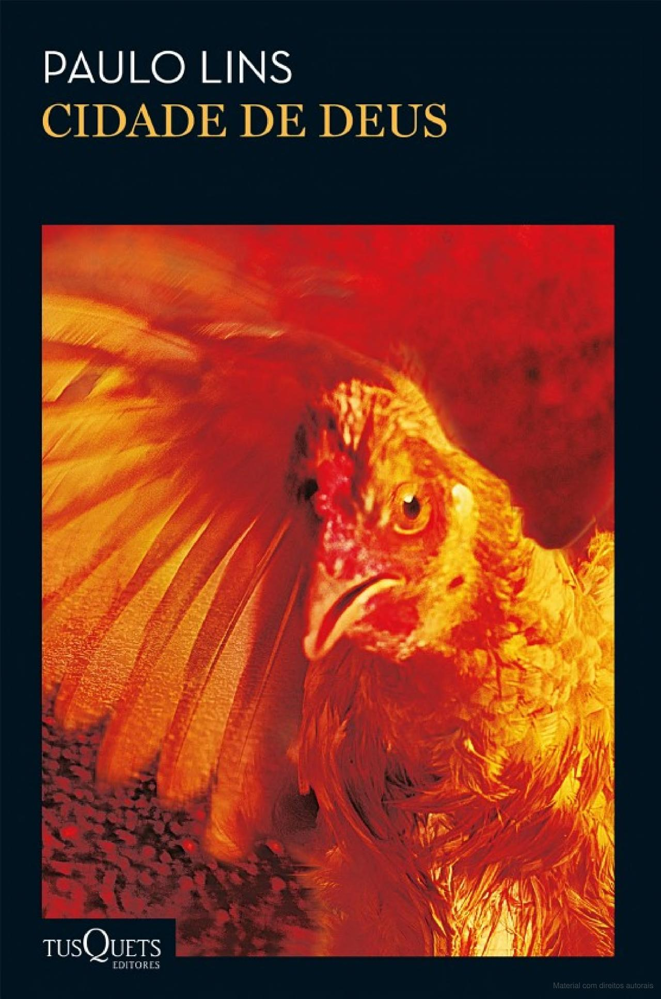
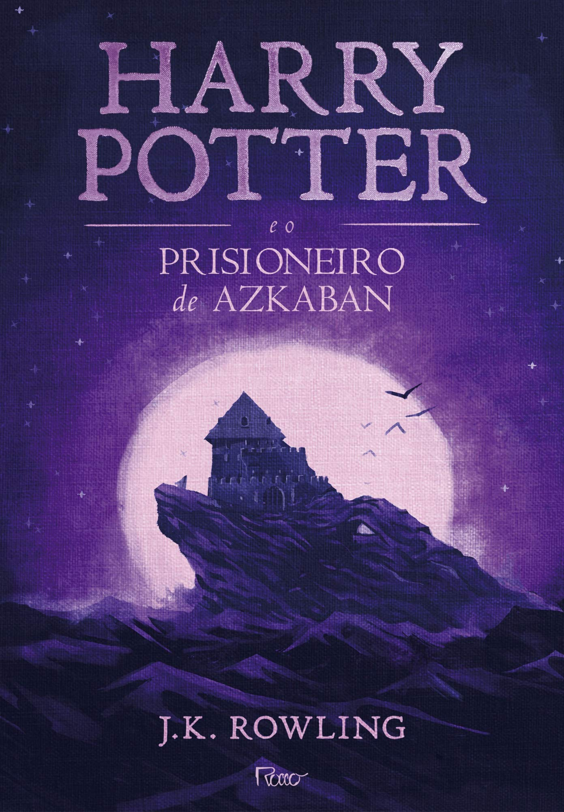

Harry Potter e a ordem da fênix

Sinopse
Parece impossível, mas, no bairro mais Muggle do mundo Muggle, Harry é
emboscado por Dementors! Para salvar a sua vida e a do primo Dudley,
Harry não tem outra hipótese senão usar magia - mesmo sabendo que isso
significará a sua expulsão mais que certa de Hogwarts. Enquanto o
Ministério da Magia continua a não acreditar que o terrível Senhor das
Trevas está de volta, Voldemort e os seus fiéis Devoradores da Morte já
começaram a preparar o seu regresso ao poder. Porém, há uma nova
esperança: uma antiga ordem secreta, da qual os pais de Harry fizeram
parte, voltou a organizar-se e Dumbledore está atento.
Fonte: Google Books
| Data |
Autor |
Idioma Original |
Generos |
Número de Paginas |
Editora |
|
21 de junho de 2003
|
J.K Rowling |
Inglês |
Romance, Ficção juvenil, Literatura fantástica
|
702 |
Rocco |
The Witcher Volume 1
Sinopse
Viajando perto da orla da Floresta Negra, na terra de Angren, o bruxo
Geralt conhece um homem viúvo cuja esposa morta e assassina reside em
uma misteriosa mansão conhecida como Casa de Vidro. Com suas infinitas
salas e horror em cada esquina, Geralt terá que usar todas as suas
proezas de bruxo para resolver o mistério da mansão e sobreviver.
Fonte: Google Books
| Data |
Autor |
Idioma Original |
Generos |
Número de Paginas |
Editora |
|
19 de fevereiro de 2014
|
Paul Tobin |
Inglês |
Quadrinhos, Romance gráfico
|
120 |
Dark Horse Books |
Os Miseráveis

Sinopse
É a história de um homem que, por causa de um erro cometido na
juventude, sofreu pelo resto da vida. A saga de Jean Valjean se passa na
França, na época revolucionária do final do século XVIII e início do
XIX, quando monarquistas e republicanos se degladiavam nas ruas. Um
romance com personagens marcantes, como o inspetor Javert, que passa a
vida perseguindo Valjean, e Cosette, cuja história de amor enfrenta as
inúmeras armadilhas que o destino impõe. Uma obra-prima do Romantismo.
Fonte: Google Books
| Data |
Autor |
Idioma Original |
Generos |
Número de Paginas |
Editora |
| ??/??/1862 |
Vitor Hugo |
Francês |
Romance, Tragédia, Ficção histórica, Épico
|
1511 |
Martin Claret |
Cidade de Deus

Sinopse
Cidade de Deus traz um panorama sofisticado sobre a vida em uma das
regiões mais pobres do Rio de Janeiro, um microcosmo de alguns dos
maiores e mais perenes problemas do país. Com estilo peculiar, o autor
Paulo Lins constrói um cenário que ainda hoje dialoga com a realidade
dos moradores das comunidades cariocas e brasileiras em geral; baseado
em fatos, o romance trata de juventude, tráfico de drogas e governo
paralelo, extrema pobreza e todas as formas de violência. Publicado pela
primeira vez em 1997, Cidade de Deus foi adaptado para o cinema em 2002
pelo diretor Fernando Meirelles. O filme teve grande repercussão
nacional e internacional, sendo até hoje considerado um dos maiores
sucessos da história do cinema brasileiro.
Fonte: Google Books
| Data |
Autor |
Idioma Original |
Generos |
Número de Paginas |
Editora |
|
14 de agosto de 2018
|
Paulo Lins |
Português |
Ficção policial, Ficção autobiográfica
|
400 |
Tusquets |
Harry Potter e o Prisioneiro de Azkaban

Sinopse
Daquela vez Harry Potter não conseguira conter-se. Quebrara uma das
regras principais de Hogwarts - não exercer técnicas de feitiçaria fora
dos muros da escola. Mas aquela detestável Tia Marge merecia permanecer
umas boas horas suspensa no tecto da sala dos Dursleys, inchada como um
balão. Além disso já faltavam poucos dias para recomeçar as aulas. Mas o
seu terceiro ano não irá ser fácil. Da prisão de Azkaban fugira o feroz
Sirus Black, um dos mais fiéis seguidores do assustador Lord Voldemort
para o que Harry Potter continuava a ser o alvo favorito. O pior é que o
herói de J. K. Rowling começa a suspeitar da existência de um traidor
entre os seus próprios amigos...
Fonte: Google Books
| Data |
Autor |
Idioma Original |
Generos |
Número de Paginas |
Editora |
|
8 de dezembro de 2015
|
J.K Rowling |
Inglês |
Romance, Literatura fantástica
|
345 |
Rocco |